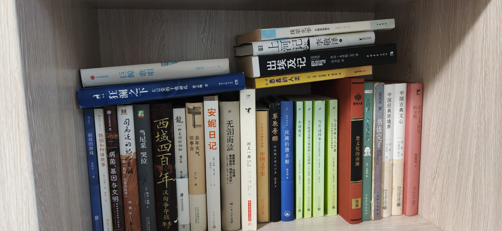

南房东第四层内

- 寂寞的游戏
- 狂澜之下：左宗棠的十张面孔 徐志频著 湖南文艺出版社
- 韩剧如何讲故事
- 中信出版集团 病菌、基因与文明：传染病如何影响人类社会
- 巨鲸歌唱 周晓风
- 出埃及记 EXODUS BESTSELLER THE ACCLAIMED 高卫民译 Leon Uris 里昂·尤里斯 著 MODERN TIMES
- 司马迁的记忆之钥 读《史记·太史公自序》
- 当尼采哭泣
- 西域四百年：汉匈争夺战 李东
- 龍 一种未明的动物 增订本 马小星
- 旧亭台 去年天气 叶广芩 北京十月文艺出版社 北京出版集团公司
- 安妮日记 [德] 安妮·弗兰克 高年生
- 无泪而泣：集中营的「特别工作队」 奥斯维辛—比克瑙 广东人民出版社
- 河上一周
- 吉川幸次郎作品集 中国文学史
- 上河记 李敬泽
- 愚蠢的人类 [英] 汤姆·菲利普斯 图 姜文波 译
- 草原帝國：拓跋魏王朝之兴衰 陈正样
- 陈春成作品 夜晚的潜水艇 陈春成
- 珠翠光华：中国首饰图史
- 小说教室 [日]根本昌夫
- 关于陀思妥耶夫斯基的六次讲座
- 与达洛维夫人共舞 文学名著背后的灵感故事
- 楚文化的南渐 丙编
- 王国维：一个人的书房 中国華僑出版社
- 金克木著 书读完了 SHUDUWANLE
- 中国经典原境界 顾随 讲 刘在昭 笔记 北京大学出版社
- 中国古典文心 顾随 讲 叶嘉堂 笔记
- 宋代士人阶层的女性 铁爱花
共 29 本书，上传于 2026-10-03 08:27:48。